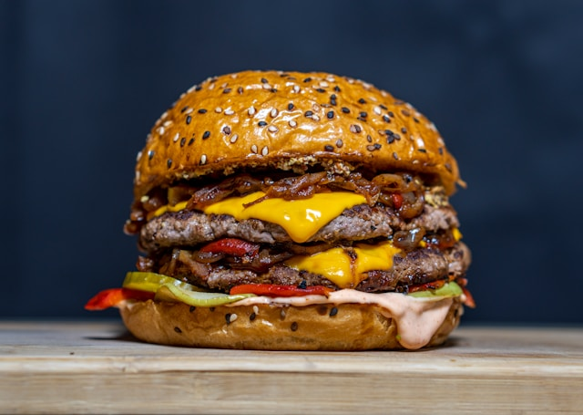

Home
Smashed Burger with Bacon Jam

Smashed Burger with Bacon Jam
Ingredients
- 1 lb Bacon, cut into 1 inch pieces
- 1 White onion, finely chopped
- 4 Shallots, minced
- 2 Cloves garlic, minced
- Half Cup Brown sugar
- Half Cup Bourbon Barrel Aged Maple Syrup
- 1/3 Cup Apple cider vinegar
- 1 tsp Chili Powder
- 1 lb Ground Beef
- 1 Jalapeno, sliced
- 3 Slices Cheddar Cheese
- Bootleg Burger Seasoning
- Brioche Hamburger Buns
- Burger Sauce
Steps
Bacon Jam
- Cook bacon over medium heat until crispy.
- Transfer 1-2 tablespoons of bacon fat into a saucepan and set it on the griddle over medium heat.
- Add chopped onion and shallots to the saucepan and cook until caramelized, approximately 15 minutes. Stir occasionally.
- Stir in minced garlic, brown sugar, maple syrup, apple cider vinegar, chili powder, and cooked bacon.
- Bring the mixture to a simmer and cook for about 10 minutes, or until the liquid has reduced.
Smash Burgers
- Divide the ground beef into 3 equal portions and season each portion with Burger seasoning.
- Heat some oil on a smoking hot griddle and place the burger portions on it, smashing them flat.
- Once ready, flip the burgers and sprinkle more Bootleg Burger seasoning on top. Add a slice of cheese to each burger.
- Toast the sliced jalapenos on the griddle.
- Once the cheese is melted, place the burgers on brioche buns.
- Top the burgers with toasted jalapenos, a generous spoonful of bacon jam, and a squirt of Burger Sauce.
- Serve and enjoy!